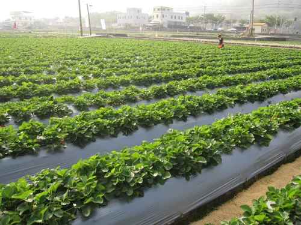

Eco-Friendly Solutions for a Sustainable Future
Leading the way in biodegradable products, backed by DRDO expertise.
Explore Our ProductsInnovative Bio-Plastic Solutions
CarryGreen is the flagship brand of Ikshwaak Eco Solutions, a forward-thinking company dedicated to pioneering sustainable alternatives in packaging and daily-use products. With a core mission to accelerate the global shift toward eco-conscious living, we offer a wide range of innovative, compostable solutions that serve industrial, commercial, and domestic sectors.
Through our collaboration with the Defence Research and Development Organisation (DRDO), we develop cutting-edge biodegradable and compostable products designed to replace single-use plastics. From certified compostable bags to eco-friendly laminate films, our products minimize environmental impact and promote a circular economy.
Through CarryGreen, we empower businesses and consumers to make responsible choices that support a cleaner, greener planet. Our commitment to sustainability is matched only by our dedication to quality and innovation.
Advanced Technology
Leveraging DRDO's expertise to create cutting-edge biodegradable materials.
Environmental Impact
Our products decompose naturally, significantly reducing landfill waste.
Quality Assurance
Rigorous testing ensures our products meet both environmental and performance standards.
Our Featured Products
Explore our comprehensive range of eco-friendly solutions designed to meet diverse needs across industries. Our products combine cutting-edge biodegradable technology with practical functionality, setting new standards in sustainable packaging and daily-use items. Each product in our portfolio is carefully engineered to deliver optimal performance while ensuring complete biodegradability. From shopping bags that carry your groceries to specialized medical waste containers, our products serve various sectors with the same commitment to quality and environmental responsibility. Every item is rigorously tested to meet international standards for biodegradability and durability, ensuring you get reliable performance without compromising on eco-friendliness.

Biodegradable Shopping Bags
Durable, eco-friendly bags that decompose naturally within 180 days.
- ✓ Multiple sizes available
- ✓ 5-10 kg load capacity
- ✓ 100% decomposable

Biodegradable Garbage Bags
Strong, leak-proof bags that are completely biodegradable.
- ✓ Leak-resistant design
- ✓ Various sizes available
- ✓ Enhanced durability
Product Benefits
Eco-Friendly
100% Biodegradable materials
Lab Tested
DRDO certified quality
Sustainable
Naturally decomposing
Durable
Strong and reliable
DRDO Technology Partnership
Our partnership with DRDO enables us to develop advanced biodegradable materials that meet international standards. This collaboration ensures our products deliver both environmental benefits and reliable performance for various applications.
- Advanced Research & Development
- Quality Control Standards
- Innovative Solutions
Our Leadership
Meet the visionaries driving our mission towards a sustainable future.
Lakshmikiran Jasthi
Director
Director of Ikshwaaks Ecosolutions Pvt. Ltd., with over a decade of experience in the IT industry. Specializes in team leadership, customer engagement, and model-driven strategy to guide the company with a focus on operational excellence and innovation. Committed to expanding our impact in sustainable and biodegradable products while positioning Ikshwaaks Ecosolutions as a trusted leader in eco-friendly manufacturing.
Dr. Sai Nandana
Managing Director
I'm Dr. Sai Nandana, Managing Director of Ikshwaaks Ecosolutions Pvt. Ltd., a women-led enterprise dedicated to delivering sustainable, eco-friendly manufacturing solutions for a cleaner and greener future. By profession, I am a doctor, committed to health and well-being—a value I extend beyond medicine into the environment through our work at Ikshwaaks Ecosolutions. My medical background gives me a deep appreciation for the vital connection between human health and a healthy planet, driving my passion for sustainable development and responsible manufacturing. At Ikshwaaks Ecosolutions, we focus on producing biodegradable bags and mulching sheets that help reduce plastic pollution, support sustainable agriculture, and contribute to a circular economy. As Managing Director, I oversee strategic decision-making, business growth, and partnerships, ensuring that our products not only meet market needs but also align with our environmental mission. Our goal is simple yet powerful: to create products that protect the environment, empower communities, and inspire industries to adopt greener practices. Under my leadership, we strive to make Ikshwaaks Ecosolutions a benchmark for sustainable manufacturing in India and beyond.
Suraj
Head of Operations
I'm Suraj, Operations Head at Ikshwaaks Ecosolutions Pvt. Ltd., overseeing the day-to-day functioning of our manufacturing plant and ensuring smooth, efficient operations across all departments. With in-depth knowledge of our machinery, production processes, and plant workflows, I ensure that every stage—from raw material handling to final product dispatch—meets our high standards of quality, safety, and efficiency. My role bridges the technical and business aspects of our operations, aligning production capabilities with market demands. Beyond plant management, I actively contribute to marketing strategies and customer engagement initiatives, helping the company not only produce but also successfully position our biodegradable bags and mulching sheets in the market. By integrating operational excellence with smart marketing, I ensure that Ikshwaaks Ecosolutions remains competitive, reliable, and responsive to customer needs. My focus is clear: maximize productivity, maintain quality, and support the company's mission to deliver eco-friendly products that make a positive environmental impact.
Additional Products
- Agricultural Mulching Film
 Carry Bags
Carry Bags Garbage Bags
Garbage Bags Medical & Regular Aprons
Medical & Regular Aprons Head Caps
Head Caps Medical Waste Bags
Medical Waste Bags Water Bottles
Water Bottles
Contact Us
Interested in our biodegradable products? Contact us for product information, bulk orders, or custom solutions.